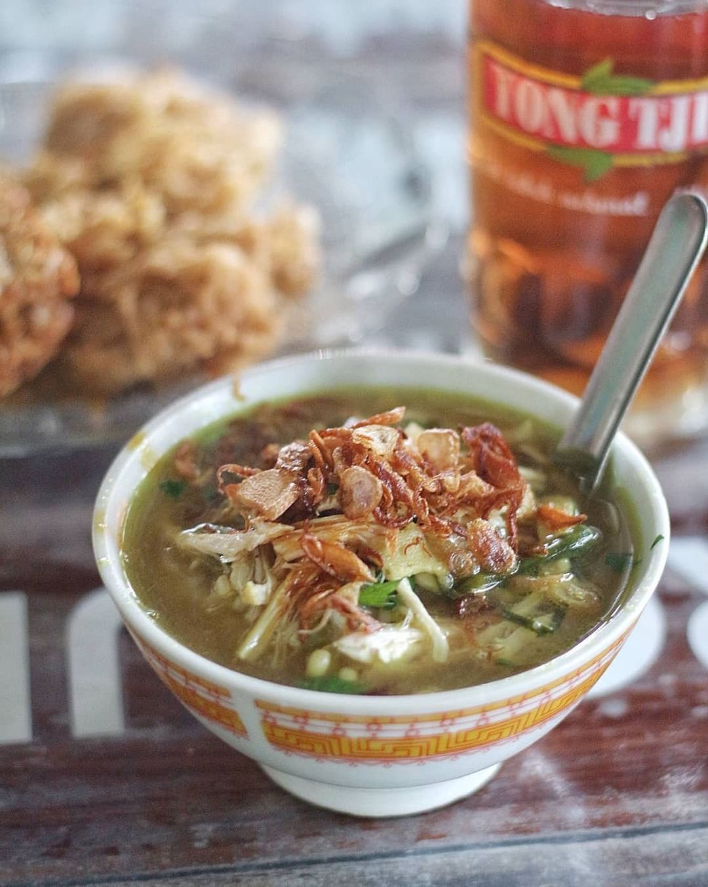
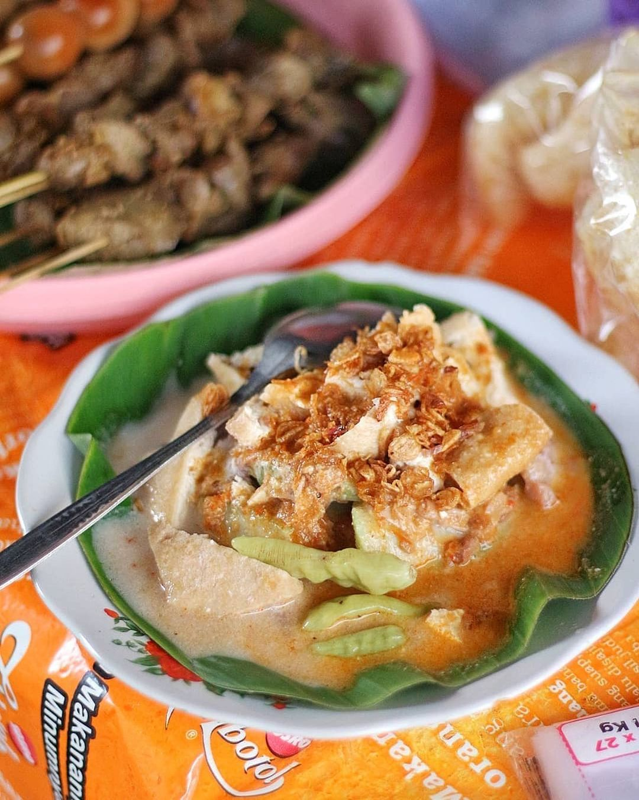
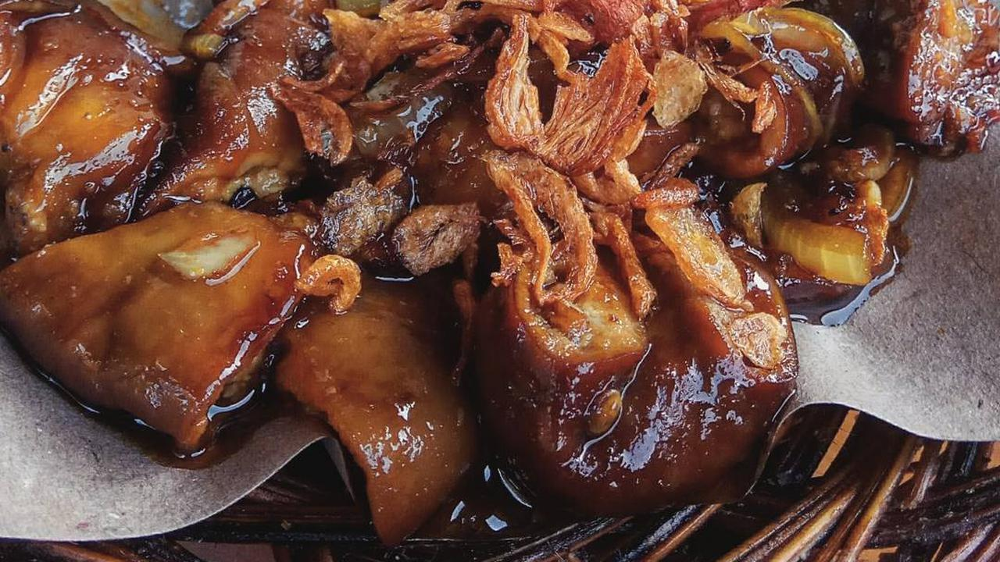
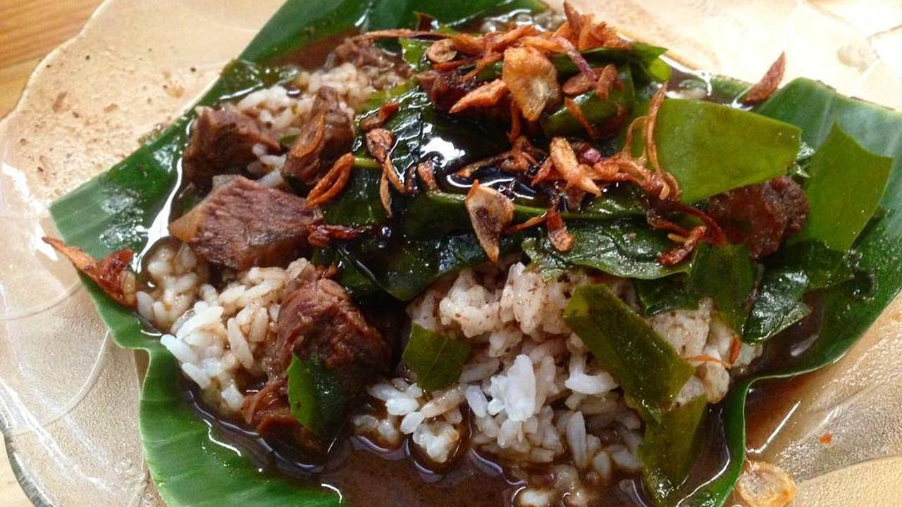

KULINER KHAS KUDUS
Ketika mengunjungi kota Kudus, jangan lupa mencicipi kuliner khasnya. Kuliner khas Kudus sangat berbeda dengan daerah lain dan kental dengan budaya. Jika di daerah lain sotonya menggunakan daging ayam dan sapi, di Kudus tidak. Soto kuliner khas Kudus menggunakan daging kerbau. Semakin menarik untuk dicicipi bukan?
Selain soto, sebenarnya masih ada banyak kuliner khas Kudus yang wajib dicicipi wisatawan. Mulai dari gethuk nyimut, lentog tanjung, nasi pindang, garang asem, sate kerbau, dan masih banyak lagi. Simak terus samapi selesai, pastinya seru seru deh.
Gethuk Nyimut

Gethuk Nyimut
Biasanya Anda dapat menemukan Gethuk Nyimut didaerah pegunungan lereng muria, Gethuk ini terbuat dari ketela yang dihaluskan kemudian didalamnya terdapat banyak varian, seperti coklat, gula, bahkan stroberi.

Soto Kudus
Soto Kudus merupakan kuliner khas kudus yang diolah dengan daging kerbau. Meski ada juga yang menggunakan daging ayam. Dulu saat Sunan Kudus tiba di Kudus, beliau membuat larangan menyembelih sapi untuk menghormati penduduk asli Kudus yang mayoritas beragama Hindu.
Budaya ini masih ada hingga sekarang meskipun beberapa orang sudah berani menyembelih sapi saat Idul Adha dengan alasan sudah tidak ada orang Hindu di Kudus. Isiannya hanya menggunakan kecambah, daun bawang, dan seledri.

Lentog Tanjung
Lentog Tanjung merupakan kuliner khas Kudus yang jarang ditemui di luar daerah asalnya. Lentog yang berarti lontong dan Tanjung yang berarti desa Tanjungkarang daerah asal makanan ini.
Terdiri dari lontong yang diiris kecil-kecil, lodeh tahu, dan sayur nangka muda dengan sambal cair. Selain jarang ditemui di luar Kudus, keunikan makanan ini ada pada lontongnya yang sebesar paha orang dewasa.

Garang Asem
Garang Asem termasuk kuliner khas Kudus yang cukup melegenda. Kuliner yang satu ini sangat terkenal dan banyak digemari wisatawan. Makanan ini dahulunya dianggap mewah karena hanya bisa dinikmati konglomerat saja.
Rasa Garang Asem khas Kudus sangat istimewa dan berbeda dengan Garang Asem daerah lainnya. Konon rasa khas ini hanya bisa didapat ketika wisatawan memakannya di Kudus. Sementara ketika diolah di rumah, rasanya akan sangat berbeda.

Ayam Gongso
Satu lagi kuliner khas Kudus yang mesti dicoba. Sederhana memang, yakni berupa tumis ayam dengan bumbu kecap, tapi rasanya jangan diremehkan. Manis, gurih, dan pedas ketiganya berpadu membuat rasa ledak nan nikmat di mulut. Menu praktis tapi istimewa ini akan jauh lebih lezat bila disantap bersama nasi goreng.

Sate Kerbau
Bukan lagi sate daging sapi dan kambing, kuliner khas Kudus yang cukup mencolok adalah sate kerbau. Banyak wisatawan dan penduduk lokal yang suka dengan cita rasa khas sate kerbau Kudus ini. Teksturnya juga tidak alot karena sudah digiling sebelum dililitkan ke tusuknya.
Tak hanya gurih dan asin, ada rasa manis yang didapatkan dari kecap manis dan gula merah. Kini sate kerbau tak hanya dijual di Kudus. Sudah banyak daerah yang menawarkan menu kuliner khas Kudus ini.

Nasi Pindang
Nasi Pindang adalah nasi dengan irisan daging dan daun melinjo yang diguyur kuah santan. Daging yang digunakan adalah daging kerbau seperti pada Soto Kudus. Hidangan ini dahulu hanya ada di acara hajatan.
Kuliner khas Kudus yang satu ini mempunyai kemiripan dengan Rawon Jawa Timur. Hanya saja kuah santan yang dicampur keluak dan daun melinjo yang menjadikannya istimewa.

Tahu Telor
Tahu telor adalah kuliner khas Kudus yang terbuat dari bahan dasar kacang, kecap, dan gula merah. Hampir mirip dengan pecel atau bumbu tahu petis. Rasa khas tahu telor ini manis, kecut, dan pedas.
Bedanya lagi, tahu telor dilengkapi dengan aneka macam sayuran. Agar lebih nikmat, santaplah dengan nasi atau lontong untuk menemani tahu telor. Lalu lauknya bisa ditambah peyek udang garing.